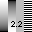
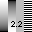

The test passes if all the reference images look the same, AND when moved inside the peach rectangle, the cursor looks like the reference images (ignoring the small numeric values in each image).

Greyscale PNG images with various gamma values, 16 bit/pixel. Pixel values adjusted so that, when gamma corrected, the images look the same.